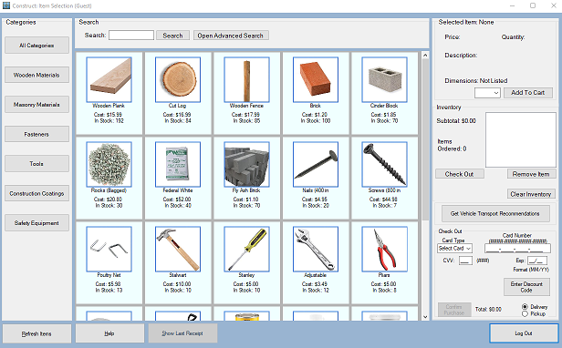
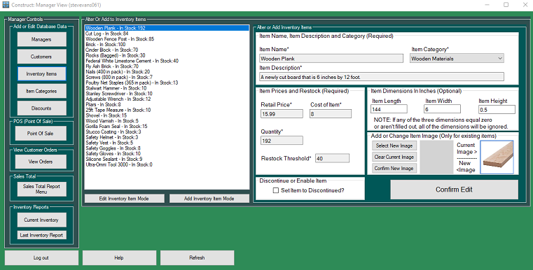
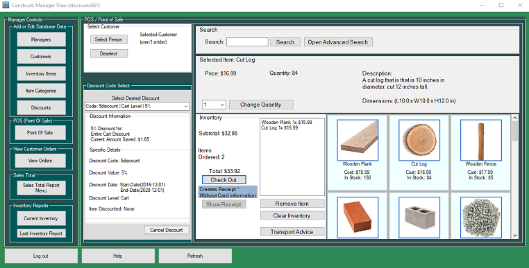

The Construct Program
About the Construct program
The Construct program allows users to buy hardware related materials, it also provides cargo recommendations based on the size and quantities of items ordered.
There are multible views in the program that provide a wide range of uses.
Customer-View for letting users buy items.
Manager-View for managing items, discounts, and users.
Manger-View: Point of Sales for letting employees perform orders for customers.
The Customer-View

The Customer-View, it allows users to pick and purchase items. It has a advanced search that allows for finding specific categories or prices. Users may also apply discounts to items if they have a code for one.
The Manager-View

The Manager-View gives the user the ability to add or alter nearly everything used in the program's database, with some execeptions.
There are also reports for orders during given date ranges and inventory reports that allows viewing of items that are out of stock.
Manager-View - Point of Sales (POS)

The Point of Sales (POS) menu is a sub menu in the Manager-View. Point of Sales allows an employee to perform orders for specific customers and apply discounts if needed. Point of Sales has all of the same capabilities as the Customer-View.